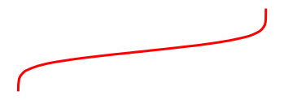

Special content blocks¶
A common use of directives and roles is to designate “special blocks” of your content. This allows your to include more complex information such as warnings and notes, citations, and figures. This section covers a few common ones.
Notes, warnings, and other admonitions¶
Let’s say you wish to highlight a particular block of text that exists slightly apart from the narrative of your page.
You can use the {note} directive for this.
For example, the following text:
```{note}
Here is a note!
```
Results in the following output:
Note
Here is a note!
There are a number of similarly-styled blocks of text. For example, here is a {warning}
block:
Warning
Here’s a warning! It was created with:
```{warning}
```
For a complete list of options, see the sphinx-book-theme documentation.
Blocks of text with custom titles¶
You can also choose the title of your message box by using the
{admonition} directive. For example, the following text:
```{admonition} Here's your admonition
Here's the admonition content
```
Results in the following output:
Here’s your admonition
Here’s the admonition content
If you’d like to style these blocks, then use the :class: option. For
example:
This admonition was styled…
Using the following pattern:
```{admonition} My title
:class: tip
My content
```
New style admonitions¶
The admonition syntax above utilises the general directives syntax. This has the advantage of making it consistent with every other directive. However, a big disadvantage is that, when working in any standard Markdown editor (or with the Jupyter Notebook interface), the text they contain will not render nicely as standard Markdown (for Markdown previews).
By enabling extended syntax in your _config.yml, you will gain access to an alternative syntax for admonitions:
parse:
myst_extended_syntax: true
The key differences is that, instead of back-ticks (`), colons (:) are used,
and thus the content renders as regular Markdown.
For example:
:::{note}
This text is **standard** _Markdown_
:::
:::{note} This text is standard Markdown :::
Similar to normal directives, these admonitions can also be nested:
::::{important}
:::{note}
This text is **standard** _Markdown_
:::
::::
::::{important} :::{note} This text is standard Markdown ::: ::::
:::{note} This syntax only supports a selective subset of directives:
admonition, attention, caution, danger, error, important, hint, note, seealso, tip and warning. :::
These directives do not currently allow for parameters to be set, but you can add additional CSS classes to the admonition as comma-delimited arguments after the directive name.
Also, admonition can have a custom title.
For example:
:::{admonition,warning} This *is* also **Markdown**
This text is **standard** _Markdown_
:::
:::{admonition,warning} This is also Markdown This text is standard Markdown :::
Insert code cell outputs into admonitions¶
If you’d like to insert the outputs of running code inside admonition
blocks, we recommend using glue functionality.
For example, we’ll insert one of the outputs that was glued into the book from the code outputs page.
The code below:
```{note}
Here's my figure:
{glue:figure}`sorted_means_fig`
```
generates:
Note
Here’s my figure: 
See Insert code outputs into page content for more information on how to use glue to insert your outputs directly into your content.
:::{tip}
To hide code input and output that generated the variable you are inserting, use the remove_cell tag.
See Hide or remove content for more information and other tag options.
:::
Panels¶
Panels provide an easy fay for you to organize chunks of content into flexible containers on your page. They are useful for creating card-like layouts, flexible columns, and grids. Panels are based off of Bootstrap CSS, and utilize Bootstrap’s classes to control the look and feel of panels.
Here is an example that creates two panels:
````{panels}
Panel header 1
^^^
Panel body 1
+++
Panel footer 1
---
Panel header 2
^^^
Panel body 2
+++
Panel footer 2
````
---separates each panel^^^defines the panel header+++defines the panel footer
Note
Panel headers and footers are optional.
If you don’t include ^^^ or +++ in your panel, they will not show up.
You can embed all kinds of content inside of panels. For example, the following panels:
Content of the left panel.
example-badge
were created with:
````{panels}
Content of the left panel.
{badge}`example-badge,badge-primary`
---
```{link-button} content/panels
:text: Clickable right panel
:type: ref
:classes: stretched-link
```
````
See also
See the Sphinx Panels card layout documentaiton for more information.
Controlling the look and feel of panels¶
You can control the look and feel of panels by passing attaching bootstrap classes to panel headers/body/footers.
You do this by passing configuration options to your {panels} directive.
For example:
See also
See the Panels card styling documentation for more information.
For example, you can control how many columns are in your panels by using Bootstrap column classes. These panels:
Header A
Body A
Header B
Body B
Header C
Body C
Were created by this code:
````{panels}
:column: col-4
:card: border-2
Header A
^^^
Body A
---
Header B
^^^
Body B
---
Header C
^^^
Body C
````
Dropdowns¶
Dropdowns allows you to hide content behind a title and a button. There are two kinds of dropdowns in Jupyter Book:
The {dropdown} directive¶
Use the {dropdown} directive to create a clickable dropdown with a title.
For example:
source
```{dropdown} Here's my dropdown
And here's my dropdown content
```
result
Here’s my dropdown
And here’s my dropdown content
Dropdown admonitions¶
You can also hide the body of your admonition blocks so that users must click a button to reveal their content. This is helpful if you’d like to include some text that isn’t immediately visible to the user.
To turn an admonition into a dropdown, add the dropdown class to them. For example:
source
```{note}
:class: dropdown
The note body will be hidden!
```
result
Note
The note body will be hidden!
You can use this in conjunction with {admonition} directives to include your
own titles and stylings. For example:
source
:::{admonition,dropdown,tip} Click here!
Here's what's inside!
:::
result
:::{admonition,dropdown,tip} Click here! Here’s what’s inside! :::
:::{important} Admonition dropdowns require JavaScript to be enabled on the browser which they are viewed. By contrast, the dropdown directive below works purely via HTML+CSS. :::
Definition lists¶
Definition lists are enabled by defining the following setting in your _config.yml:
parse:
myst_extended_syntax: true
Definition lists utilise the markdown-it-py deflist plugin, which itself is based on the Pandoc definition list specification.
Here’s an example:
source
Term 1
: Definition
Term 2
: Definition
result
Term 1 : Definition
Term 2 : Definition
From the Pandoc documentation:
Each term must fit on one line, which may optionally be followed by a blank line, and must be followed by one or more definitions. A definition begins with a colon or tilde, which may be indented one or two spaces.
A term may have multiple definitions, and each definition may consist of one or more block elements (paragraphs, code blocks, lists, etc.)
Here is a more complex example, demonstrating some of these features:
Term with Markdown : Definition with reference
A second paragraph : A second definition
Term 2 ~ Definition 2a ~ Definition 2b
Term 3 : A code block : > A quote : A final definition, that can even include images:

This was created with the following Markdown:
Term *with Markdown*
: Definition [with reference](ontent/definition-lists)
A second paragraph
Term 2
~ Definition 2a
~ Definition 2b
Term 3
: A code block
: > A quote
: A final definition, that can even include images:
<img src="../images/fun-fish.png" alt="fishy" width="200px">
Quotations and epigraphs¶
Quotations and epigraphs provide ways to highlight information given by others.
Quotations¶
Regular quotations are controlled with standard Markdown syntax, i.e., by
inserting a caret (>) symbol in front of one or more lines of text. For example:
source
> Here is a cool quotation.
>
> From me, Jo the Jovyan
result
Here is a cool quotation.
From me, Jo the Jovyan
Epigraphs¶
Epigraphs draw more attention to a quote and highlight its author. You should keep these relatively short so that they don’t take up too much vertical space. Here’s how an epigraph looks:
source
```{epigraph}
Here is a cool quotation.
From me, Jo the Jovyan
```
result
Here is a cool quotation.
From me, Jo the Jovyan
You can provide an attribution to an epigraph by adding -- to the final line, followed by the quote author. For example:
source
```{epigraph}
Here is a cool quotation.
-- Jo the Jovyan
```
result
Here is a cool quotation.
—Jo the Jovyan
Glossaries¶
Glossaries allow you to define terms in a glossary so you can then link back to it throughout your content. You can create a glossary with the following syntax:
```{glossary}
Term one
An indented explanation of term 1
A second term
An indented explanation of term2
```
which creates:
- Term one
An indented explanation of term 1
- A second term
An indented explanation of term2
To reference terms in your glossary, use the {term} role. For example,
{term}`Term one` becomes Term one and {term}`A second term`
becomes A second term.
Tabbed content¶
You can also use sphinx-panels to produce tabbed content.
This allows you to display a variety of tabbed content blocks that users can click on.
For example, here’s a group of tabs showing off code in a few different languages:
int main(const int argc, const char **argv) {
return 0;
}
def main():
return
class Main {
public static void main(String[] args) {
}
}
function main()
end
PROGRAM main
END PROGRAM main
You can use this functionality with the {tabbed} directive. You can provide a sequence of {tabbed} directives, and each one will be used to generate a new tab (unless the :new-group: option is added to a {tabbed} directive.)
For example, the following code:
```{tabbed} Tab 1 title
My first tab
```
```{tabbed} Tab 2 title
My second tab with `some code`!
```
produces
My first tab
My second tab with some code!
Insert code outputs in your tabs with the glue functionality.
For example, the following tabs use this functionality to glue images and tables generated somewhere else in these docs:

Fig. 1 This is a caption, with an embedded {glue:text} element: 3.00!¶
| first | second | third | |
|---|---|---|---|
| 0 | 2.906166 | 2.841093 | 3.091271 |
| 1 | 3.235090 | 2.969250 | 2.876545 |
| 2 | 3.091469 | 2.820253 | 2.912487 |
| 3 | 3.460336 | 2.710395 | 2.946932 |
| 4 | 2.790675 | 2.979517 | 2.893935 |
Fig. 2 A caption for a pandas table.¶
````{tabbed} A histogram
```{glue:figure} boot_fig
:figwidth: 300px
:name: "fig-boot-tab"
This is a **caption**, with an embedded `{glue:text}` element: {glue:text}`boot_mean:.2f`!
```
````
````{tabbed} A table
```{glue:figure} df_tbl
:figwidth: 300px
:name: "tbl:df-tab"
A caption for a pandas table.
```
````
````{tabbed} Code to generate this
`{ code block here }`
````
See the sphinx-panels tabbed documentation for more information on how to use this.
Citations and cross-references¶
You can add citations and cross-references to your book. See References and citations for more information on how to do this.
Figures¶
You can thoroughly customise the look of figures in your book. See Images and figures for more information.
Page layout and sidebar content¶
You can also use MyST to control various aspects of the page layout. For more information on this, see Control the page layout.
Footnotes¶
You can include footnotes in your book using standard Markdown syntax. This will include a numbered reference to the footnote in-line, and append the footnote to a list of footnotes at the bottom of the page.
To create a footnote, first insert a reference in-line with this syntax: [^mylabel].
Then, define the text for that label like so:
[^mylabel]: My footnote text.
You can define [^mylabel] anywhere in the page, though its definition will always
be placed at the bottom of your built page. For example, here’s a footnote 1
and here’s another one 2. You can click either of them to see the footnotes
at the bottom of this page.
Custom <div> blocks¶
You can add custom div blocks along with whatever classes you’d like using
the {div} directive. The {div} directive will wrap everything inside in a single <div> with the classes you provide. For example:
```{div} my-class
**Some content.**
```
Will result in the following HTML when your book is built:
<div class="my-class">
<strong>Some content.</strong>
</div>
This can be useful if you’d like to style your book with custom CSS or JavaScript.
- 1
Here’s the text of my first note.
- 2
And the text of my second note. Note that you can include Markdown footnote definitions.